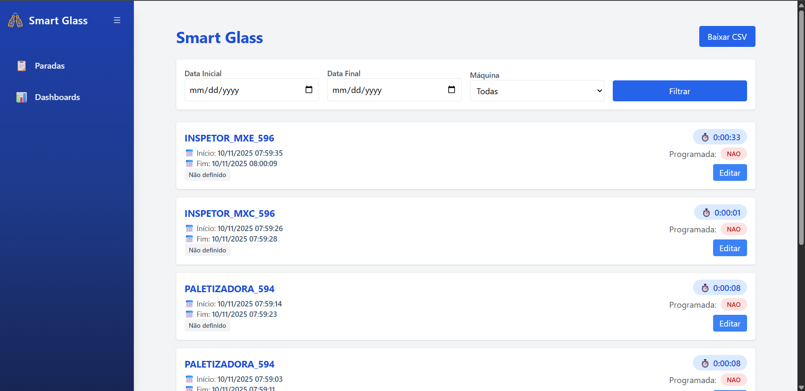

SMART GLASS
Este projeto visa monitorar e analisar as paradas de máquinas,
fornecendo os principais indicadores de desempenho, como MTBF
(Tempo Médio Entre Falhas) e MTTR (Tempo Médio Para Reparo). A plataforma também permite
a comparação entre diferentes equipamentos, facilitando a identificação de oportunidades de
melhoria e a otimização da manutenção.
Tecnologias Utilizadas
Fast API
Docker
SQL Server
HTML
JS
TailWind
OPCUA
Informações do Projeto
Coleta Automática de Dados
Coleta dados de parada de máquina diretamente do CLP através do protocolo OPC UA, fornecendo em tempo real o status e o tempo de inatividade de cada equipamento.
Substituição de Sistemas
Substituiu duas plataformas anteriores (G-Vidros e cálculo de MTBF/MTTR via SAP) que apresentavam baixa precisão devido à dependência de alimentação manual de dados.
Eliminação de Falhas Humanas
Sistema eliminou completamente as falhas humanas no input das informações através da automação do processo de coleta.
Análises Avançadas
Cálculo automático de MTBF, MTTR e percentual de paradas programadas com comparação de indicadores entre máquinas.
Principais Funcionalidades
- Verificação de tempo de parada em tempo real
- Classificação de tipo de falha
- Identificação de paradas programadas
- Integração com metodologia 5 Porquês
- Comparação de indicadores entre máquinas
- Cálculo automático de MTBF e MTTR
- Cálculo de percentual de paradas programadas
- Interface OPC UA para comunicação com CLPs
Resultados e Impacto Financeiro
Economia direta: R$ 120.000,00 que seriam gastos com solução externa
Vantagem competitiva: Lançamento automático de paradas eliminando a dependência de input manual
Melhoria na precisão: Eliminação completa de falhas humanas no registro de dados
Eficiência operacional: Substituição de dois sistemas anteriores por uma solução integrada